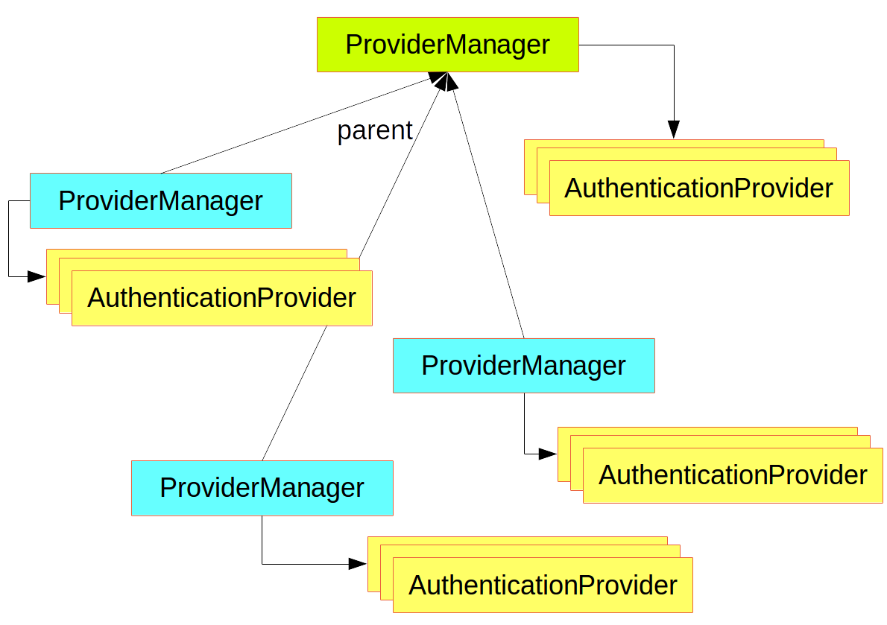
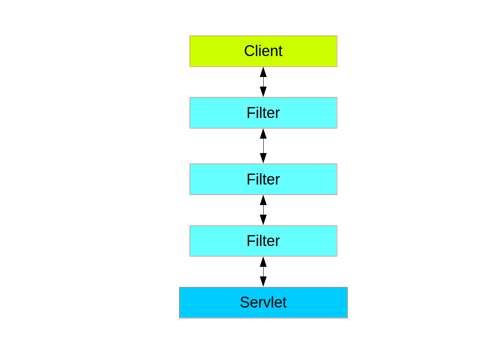
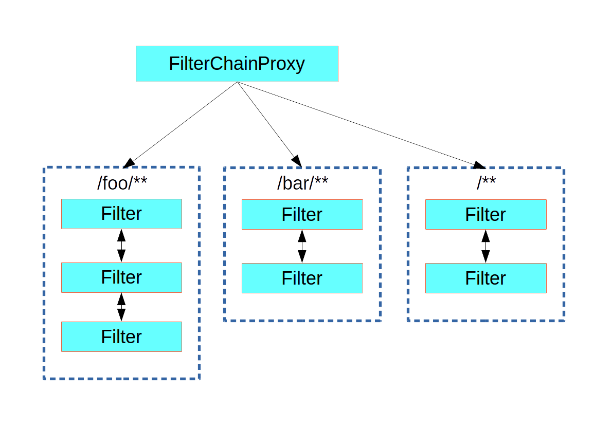

Spring Security 架构初谈
身份验证和访问控制
应用程序安全性归结为或多或少的两个独立问题：
authentication/认证（你是谁？）和 authorization/授权（你可以做什么？）。
有时人们会说“访问控制”而不是“授权”，这可能会造成混淆，但是以这种方式思考可能会有所帮助，因为“授权”在其他地方可能有点言过其重。Spring Security 的体系结构旨在将认证与授权分开，并各自具有策略和扩展点。
Authentication（身份验证/认证）
身份验证的主要策略接口是 AuthenticationManager，它只有一个方法：
1 | public interface AuthenticationManager { |
AuthenticationManager 可以在 authenticate() 方法中执行以下三项操作之一：
- 如果它可以验证输入是否代表有效的主体，则返回
Authentication（通常使用authenticated = true）。 - 如果认为输入代表无效的主体，则抛出
AuthenticationException。 - 如果无法决策，则返回
null。
AuthenticationException 是运行时异常。它通常由应用程序以通用方式处理，具体取决于应用程序的用例或目的。换句话说，通常不希望用户代码捕获并处理它。例如，web 程序将呈现一个页面，指出认证失败，后端 HTTP服务将发送401响应，取决于上下文，带有或不带有 WWW-Authenticate 标头。
AuthenticationManager 最常用的实现是 ProviderManager，它委派了 AuthenticationProvider 实例链。AuthenticationProvider 有点像 AuthenticationManager，但是它还有一个额外的方法，允许调用者查询是否支持给定的 Authentication 类型：
1 | public interface AuthenticationProvider { |
supports() 方法中的 Class <?> 参数实际上是 Class <? extends Authentication>（仅会询问它是否支持将内容传递到 authenticate() 方法中）。通过委托给 AuthenticationProviders 链，ProviderManager 可以在同一应用程序中支持多种不同的身份验证机制。如果 ProviderManager 无法识别特定的身份验证实例类型，则将跳过该类型。
ProviderManager 具有可选的父级，如果所有提供程序都返回 null，则可以咨询该父级。如果父级不可用，则 null 身份验证将导致 AuthenticationException。
有时，应用程序具有逻辑组的受保护资源（例如，与路径模式 /api/** 匹配的所有 Web 资源），并且每个组可以具有自己的专用 AuthenticationManager。通常，每一个都是 ProviderManager，它们共享一个父级。因此，父级是一种“全局”资源，充当所有提供程序的后备。

图1.使用 ProviderManager 的 AuthenticationManager 层次结构
自定义身份验证管理器
Spring Security 提供了一些配置帮助类，可以在自己的应用程序中便捷的得到通用身份验证管理器功能。最常用的帮助类是 AuthenticationManagerBuilder，它非常适合配置内存中的 JDBC 或 LDAP 用户详情，或者用于添加自定义 UserDetailsService。这是配置全局（父）AuthenticationManager 的应用程序的示例：
1 |
|
此示例与 Web 应用程序有关，但是 AuthenticationManagerBuilder 的用法更为广泛（有关如何实现 Web 应用程序安全性的详细信息，请参见下文）。请注意，AuthenticationManagerBuilder 使用 @Autowired 注入到@Bean 的方法中-这就是使它构建全局（父）AuthenticationManager 的 原因。相反，如果我们这样做的话：
1 |
|
（在配置类中使用方法的 @Override），那么 AuthenticationManagerBuilder 仅用于构建“本地” AuthenticationManager，这是全局的一个子类。在 Spring Boot 应用程序中，您可以将全局变量 @Autowired连接到另一个 bean 中，但是除非你自己明确暴漏出它，否则不能对本地对象执行此操作。
Spring Boot 提供了一个默认的全局 AuthenticationManager（只有一个用户），除非你通过提供自己的AuthenticationManager 类型的 bean 来抢占它。除非你需要自定义全局 AuthenticationManager，否则默认值本身就足够安全，你不必担心太多。
授权或访问控制
身份验证成功后，我们可以继续进行授权，这里的核心策略是 AccessDecisionManager。框架提供了三种实现方式，所有这三种实现都委托给 AccessDecisionVoter 链，有点像 ProviderManager 委托给AuthenticationProviders。
AccessDecisionVoter 使用 ConfigAttributes 修饰的身份验证主体和安全 Object 进行投票：
1 | boolean supports(ConfigAttribute attribute); |
该 Object 在 AccessDecisionManager 和 AccessDecisionVoter 的签名中是完全通用的-它表示用户可能要访问的任何内容（Web 资源或 Java 类中的方法是两种最常见的情况）。ConfigAttributes 也相当通用，用一些元数据来表示安全 Object 的修饰，这些元数据确定访问它所需的权限级别。ConfigAttribute 是一个接口，但是它只有一个通用的方法并返回 String，这些字符串以某种方式编码资源所有者的意图，表明有关允许谁访问它的规则。典型的 ConfigAttribute 是用户角色的名称（如 ROLE_ADMIN 或 ROLE_AUDIT），并且它们通常具有特殊的格式（如 ROLE_ 前缀）或表示需要求值的表达式。
大多数人只使用默认的 AccessDecisionManager，它是 AffirmativeBased 的（如果任何选民投票通过，则允许授予访问权限）。任何定制都倾向于在选民中发生，要么添加新选民，要么修改现有选民的投票方式。
使用作为 Spring 表达式语言（SpEL）表达式的 ConfigAttributes 非常常见，例如 isFullyAuthenticated() && hasRole(‘FOO')。AccessDecisionVoter 支持此功能，可以处理表达式并为其创建上下文。为了扩展可以处理的表达式的范围，需要 SecurityExpressionRoot 的自定义实现，有时还需要 SecurityExpressionHandler。
网络安全
Web 层（用于 UI 和 HTTP 后端）中的 Spring Security 基于 Servlet 过滤器，因此通常首先了解过滤器的作用会很有帮助。下图显示了单个 HTTP 请求的处理程序的典型分层。

客户端向应用程序发送请求，然后容器根据请求 URI 的路径确定对它应用哪些过滤器和哪个 servlet。一个 servlet 最多只能处理一个请求，但是过滤器形成一个链，因此它们是有序的，实际上，如果过滤器要处理请求本身，则可以否决链的其余部分。过滤器还可以修改下游过滤器和 Servlet 中使用的请求和/或响应。过滤器链的顺序非常重要，Spring Boot 通过两种机制对其进行管理：一种是 Filter 类型的 @Bean 可以具有 @Order 或实现 Ordered，另一个是它们可以成为 FilterRegistrationBean 的一部分，而 FilterRegistrationBean 本身也将顺序作为其 API 的一部分。一些现成的过滤器定义了自己的常量，以帮助表示它们希望相对于彼此的顺序（例如，Spring Session 中的 SessionRepositoryFilter 的 DEFAULT_ORDER 为 Integer.MIN_VALUE + 50，它告诉我们，它喜欢处于过滤器链的前端，但并不排除其他过滤器的出现。
Spring Security 作为链中的单个 Filter 安装，其具体类型为 FilterChainProxy，原因很快就会变得显而易见。在 Spring Boot 应用程序中，安全过滤器是 ApplicationContext 中的 @Bean，默认情况下会安装该过滤器，以便将其应用于每个请求。它安装在 SecurityProperties.DEFAULT_FILTER_ORDER 定义的位置，反过来由 FilterRegistrationBean.REQUEST_WRAPPER_FILTER_MAX_ORDER 锚定（Spring Boot 应用程序希望过滤器包装请求并修改其行为时期望的最大顺序）。但是，还有更多的功能：从容器的角度来看，Spring Security 是一个过滤器，但是在内部有其他过滤器，每个过滤器都扮演着特殊的角色。如图：

图2. Spring Security 是单个真实的过滤器，但是将处理委托给一系列内部过滤器。实际上，安全性过滤器中甚至还有一层间接层：通常作为 DelegatingFilterProxy 安装在容器中，而不必是 Spring @Bean，该代理类是 Spring Web 提供的 servlet 过滤器，它将所有工作委托给根 ApplicationContext 中的 Spring bean。该代理委托给一个始终为 @Bean 的 FilterChainProxy，通常使用固定名称 springSecurityFilterChain。
1 | public class DelegatingFilterProxy implements Filter { |
这个被委托的 Bean 就是 FilterChainProxy，它里面包含所有内部安全性逻辑，这些安全性逻辑在内部排列为一个或多个过滤器链，它们全部由 Spring Security 在同一顶级 FilterChainProxy 中管理，而对于容器来说都是未知的，该类的主要逻辑如下伪代码所示：
1 | public class FilterChainProxy implements Filter { |
Spring Security 过滤器包含一个过滤器链列表，并向与其匹配的第一个链发送请求。下图显示了基于匹配请求路径（/foo/** 在 /** 之前匹配）发生的调度。这是很常见的，但不是匹配请求的唯一方法。此调度过程的最重要特征是，只有一个链处理过请求。

图3. Spring Security FilterChainProxy 将请求分派到匹配的第一个链。 没有自定义安全配置的普通 Spring Boot 应用程序具有多个（称为n）过滤器链，通常 n = 6。前 (n-1) 个链只是忽略静态资源匹配模式，像 /css/** 和 /images/**，以及错误视图 /error（路径可以由用户通过 SecurityProperties 配置 bean 中 security.ignored 控制）。最后一条链与捕获所有路径 /** 相匹配，并且更活跃，包含用于身份验证，授权，异常处理的逻辑，会话处理，请求写入等。默认情况下，此链中总共有11个过滤器，但通常用户不必担心使用什么过滤器以及何时使用。
容器不知道 Spring Security 内部的所有过滤器这一事实非常重要，尤其是在 Spring Boo t应用程序中，默认情况下，所有
Filter类型的@Bean都会自动向容器注册。因此，如果要向安全链中添加自定义过滤器，则无需将其设置为@Bean或将其包装在明确禁用容器注册的FilterRegistrationBean中。
创建和定制过滤器链
Spring Boot 应用程序（带有 /** 请求匹配器的应用程序）中的默认后备过滤器链具有 SecurityProperties.BASIC_AUTH_ORDER 的预定义顺序。您可以通过设置 security.basic.enabled = false 完全关闭它，也可以将其用作后备并仅以较低的顺序定义其他规则。为此，只需添加类型为 WebSecurityConfigurerAdapter（或 WebSecurityConfigurer）的 @Bean 并使用 @Order 装饰类。例：
1 |
|
这个 bean 将导致 Spring Security 添加一个新的过滤器链并在回退之前对其进行排序。
许多应用程序对两套资源的访问规则完全不同。例如，承载 UI 和支持 API 的应用程序可能支持基于 cookie 的身份验证以及对 UI 部件的登录页面的重定向，而基于令牌的身份验证则具有针对 API 部件的未经身份验证的请求的 401 响应。 每组资源都有其自己的 WebSecurityConfigurerAdapter 以及唯一的顺序和自己的请求匹配器。 如果匹配规则重叠，则最早的有序过滤器链将获胜。
请求匹配以进行调度和授权
安全过滤器链（或等效的 WebSecurityConfigurerAdapter）具有请求匹配器，该请求匹配器用于确定是否将其应用于 HTTP 请求。一旦决定应用特定的过滤器链，就不再应用其他过滤器链。但是在过滤器链中，可以通过在HttpSecurity 配置器中设置其他匹配器来对授权进行更细粒度的控制。例：
1 |
|
配置 Spring Security 时最容易犯的一个错误是忘记这些匹配器适用于不同的流程，一个是整个过滤器链的请求匹配器，另一个是仅选择要应用的访问规则。
将应用程序安全规则与执行器规则相结合
如果您将 Spring Boot Actuator 用于管理端点，则可能希望它们是安全的，默认情况下它们将是安全的。实际上，将执行器添加到安全应用程序后，您会获得一条仅适用于执行器端点的附加过滤器链。它由仅匹配执行器端点的请求匹配器定义，并且其顺序为 ManagementServerProperties.BASIC_AUTH_ORDER，该顺序比默认的SecurityProperties 回退过滤器少 5 个，因此在进行回退处理之前会经过它。
如果您希望将应用程序安全规则应用于执行器端点，则可以添加一个比执行器顺序更早顺序的过滤器链，并带有一个包括所有执行器端点的请求匹配器。如果您喜欢执行器端点的默认安全性设置，那么最简单的方法是在执行器端点之后但在回退之前（例如 ManagementServerProperties.BASIC_AUTH_ORDER + 1）添加自己的过滤器。例：
1 |
|
Web 层中的 Spring Security 当前与 Servlet API 绑定在一起，因此，它仅在以嵌入式或其他方式在 Servlet 容器中运行应用程序时才真正适用。但是，它不依赖于 Spring MVC 或 Spring Web 堆栈的其余部分，因此可以在任何 servlet 应用程序中使用，例如使用 JAX-RS 的 servlet 应用程序。
方法安全
除了保护 Web 应用程序安全外，Spring Security 还提供了将访问规则应用于 Java 方法执行的支持。对于 Spring Security，这只是“保护资源”的另一种类型。对于用户而言，这意味着使用相同的 ConfigAttribute 字符串格式（例如角色或表达式）声明访问规则，但在代码中的其他位置。第一步是启用方法安全性，例如在应用程序的顶级配置中：
1 |
|
然后我们可以直接修饰方法资源，例如：
1 |
|
此示例是一种使用安全方法的服务。如果 Spring 创建了这种类型的 @Bean，则它将被代理，并且在实际执行该方法之前，调用者将必须通过安全拦截器。如果访问被拒绝，则调用者将获得 AccessDeniedException 而不是实际的方法结果。
方法上还可以使用其他注释来强制执行安全性约束，尤其是 @PreAuthorize 和 @PostAuthorize，它们可以使您编写分别包含对方法参数和返回值的引用的表达式。
结合使用 Web 安全性和方法安全性并不少见。过滤器链提供了用户体验功能，例如身份验证和重定向到登录页面等，并且方法安全性在更精细的级别上提供了保护。
使用线程
Spring Security 从根本上讲是线程绑定的，因为它需要使当前经过身份验证的主体可供各种下游使用者使用。基本构件是 SecurityContext，它可以包含一个 Authentication（当用户登录时，它将是经过显式身份验证的Authentication）。您始终可以通过 SecurityContextHolder 中的静态便捷方法来访问和操作 SecurityContext，而该方法又可以简单地操作 TheadLocal，例如：
1 | SecurityContext context = SecurityContextHolder.getContext(); |
用户应用程序代码执行此操作并不常见，但是，如果你需要编写一个自定义的身份验证过滤器，它会很有用（尽管即使如此，Spring Security 中也可以使用基类来避免使用 SecurityContextHolder）。
如果需要访问 Web 端点中当前已认证的用户，则可以在 @RequestMapping 中使用方法参数。例如：
1 |
|
该注释将当前的身份验证 (Authentication) 从 SecurityContext 中拉出，并对其调用 getPrincipal() 方法以产生方法参数。身份验证中的主体类型取决于用于验证身份验证的 AuthenticationManager，因此这是获得对用户数据的类型安全引用的有用的小技巧。
如果使用 Spring Security，则 HttpServletRequest 中的 Principal 将为 Authentication 类型，因此您也可以直接使用它：
1 |
|
如果您需要编写在不使用 Spring Security 时可以工作的代码，那么这有时会很有用（您在加载 Authentication 类时需要更加谨慎）。
异步处理安全方法
由于 SecurityContext 是线程绑定的，因此，如果要执行任何调用安全方法的后台处理，例如使用 @Async，您需要确保传播上下文。
这归结为将 SecurityContext 包装为在后台执行的任务（Runnable，Callable 等）。Spring Security 提供了一些帮助程序，例如 Runnable 和 Callable 的包装器。要将 SecurityContext 传播到 @Async 方法，您需要提供 AsyncConfigurer 并确保 Executor 具有正确的类型：
1 |
|